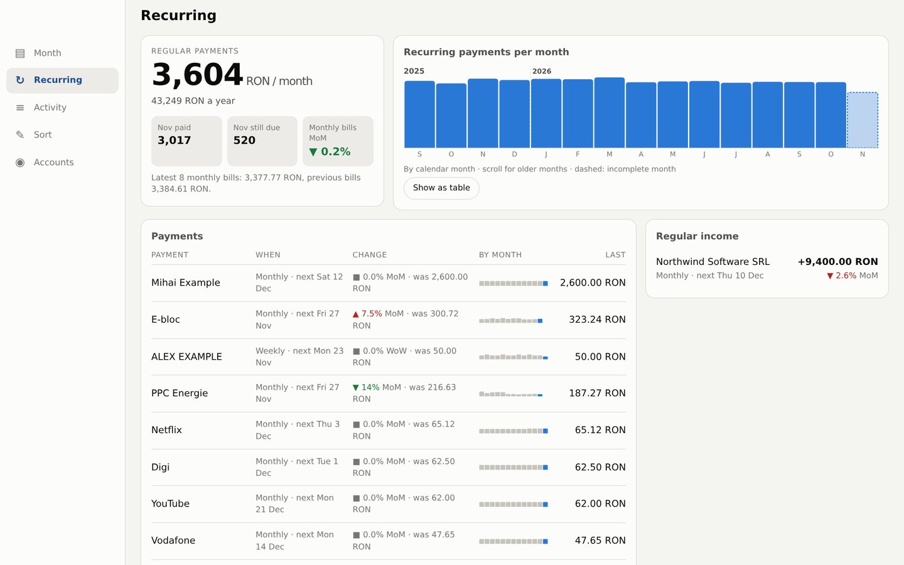
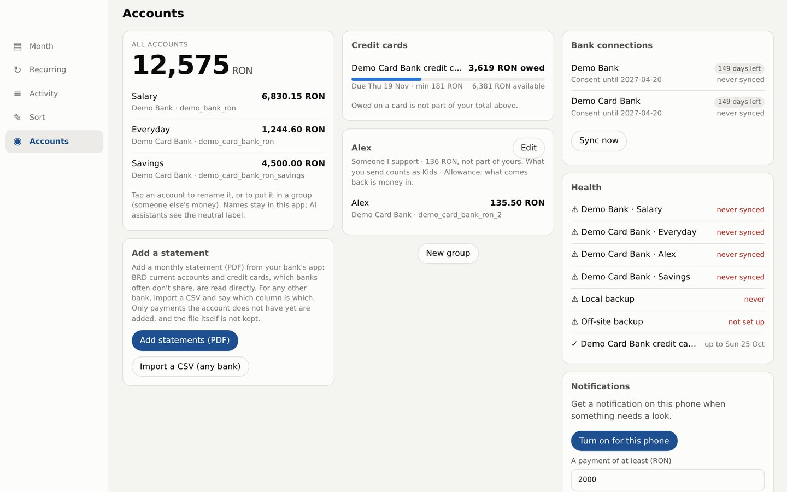

Sobre o aplicativo
Open Banking Hub, ou Bank Hub para encurtar, é uma visão auto-hospedada e somente leitura das suas próprias contas bancárias. Ele busca suas transações pela API PSD2 da Enable Banking, guarda tudo em um arquivo SQLite na sua própria máquina e responde bem a duas perguntas: para onde foi o meu dinheiro e o que eu pago regularmente?
Ele só lê os dados das contas e não tem nenhum código capaz de fazer um pagamento. Um app privado para celular e notebook mostra tudo aos dispositivos que você registrar, e um servidor MCP somente leitura permite que um assistente de IA responda perguntas a partir de uma visão ocultada: categorias, valores e estabelecimentos conhecidos, mas nunca nomes de pessoas, IBANs ou descrições de pagamentos.
Foi criado e testado com Revolut, ING Romania e BRD, e qualquer banco compatível com a Enable Banking deve funcionar. O modo de produção restrito da Enable Banking é gratuito para as suas próprias contas. O Open Banking Hub não tem vínculo com a Enable Banking nem com nenhum banco.
Galeria
Todas as capturas de tela mostram dados inventados da demonstração integrada ao app. No notebook, o app aproveita a largura: uma barra lateral, tabelas que você percorre linha a linha, e um pagamento ou favorecido que abre ao lado da lista.




Como funciona
- Sincronização somente leitura. Duas vezes por dia, o Bank Hub busca saldos e transações de cada banco vinculado, dentro do limite PSD2 de cerca de quatro solicitações automáticas por conta por dia. Logo após você autorizar um banco, ele importa todo o histórico que esse banco permite.
- Preencha as lacunas com extratos. Adicione um extrato mensal em PDF, ou um CSV de qualquer banco, para cobrir um cartão de crédito que o banco não compartilha ou o histórico que a API dele libera devagar. Só os pagamentos que faltam são adicionados, conferidos com os totais do próprio extrato, e o arquivo em si não é guardado.
- Organizado com regras. Transferências entre suas próprias contas, categorias, pagamentos avulsos e pagamentos recorrentes são calculados a partir dos dados brutos com regras, não com modelos de linguagem, então os mesmos dados sempre dão o mesmo resultado.
- Confira no celular ou no notebook. O app instalável mostra Mês, Recorrentes, Atividade, Classificar e Contas nos seus dispositivos registrados, apenas na sua rede privada. No notebook, ele acrescenta uma barra lateral, tabelas com os detalhes ao lado e atalhos de teclado.
- Pergunte a um assistente. Um assistente de IA conectado via MCP vê apenas o livro-razão ocultado e pode começar por prompts prontos, como uma revisão mensal ou uma auditoria de assinaturas.
Recursos
- Gastos honestos: Transferências entre suas próprias contas ficam de fora, reembolsos reduzem a categoria deles, e pagamentos avulsos muito grandes, como um carro ou um imóvel, aparecem à parte em vez de dominar o mês.
- Assinaturas e contas: Detectadas automaticamente, com a variação em relação à conta anterior, o que ainda vence neste mês e a sua renda regular.
- O dinheiro de outras pessoas: A conta de um filho, um pai ou uma mãe que você ajuda, ou uma empresa vão para um grupo. Os pagamentos próprios dele ficam fora dos seus totais, e o que você envia conta do jeito que você escolher: como gasto em uma categoria própria ou como transferência.
- Cartões de crédito a partir das faturas: Um cartão que o banco não compartilha é lido das faturas mensais: o valor devido, o limite, o vencimento e os parcelamentos, com um lembrete três dias antes do vencimento.
- Celular e notebook: No notebook, o mesmo app aproveita a largura: Mês com o gráfico ao lado dos números, Atividade e Recorrentes como tabelas, Contas em três colunas e as setas do teclado para mudar de mês.
- Alertas no celular: Um pagamento grande, um saldo baixo, um salário atrasado, um pagamento recorrente que mudou, uma conexão bancária prestes a expirar ou um backup que parou. Por padrão, as notificações não mostram valores nem favorecidos na tela de bloqueio.
- Funciona offline: Cada tela guarda uma cópia no celular, preenchida com antecedência no Wi-Fi ou nos dados móveis. Quando o servidor não está acessível, ou uma rede trava, o app abre a partir dessa cópia com um aviso de quando ela foi salva. Cópias com mais de 14 dias são apagadas, e um celular revogado apaga a sua cópia.
- Privado desde a concepção: Acesso bancário somente leitura, todos os dados em um único diretório na sua máquina, o app apenas na sua rede privada e cada celular registrado por convite.
- IA com uma visão ocultada: O servidor MCP abre o banco de dados somente para leitura e lê apenas as tabelas ocultadas, e um detector de vazamentos verifica que nomes, IBANs e descrições ficam de fora.
- Particularidades reais dos bancos, resolvidas: As subcontas e recargas do Revolut, o formato das descrições do ING Romania, e as páginas de 20 transações e a regra de consentimento único do BRD.
Sob o capô
O Open Banking Hub é escrito em Python, com FastAPI e SQLite. Ele roda em uma pequena máquina Linux sempre ligada, com Docker Compose e uma imagem publicada para amd64 e arm64, ou com unidades systemd. Você o acessa pelo celular por meio de uma rede privada como o Tailscale; ele não deve ficar exposto na internet pública. Valores em moeda estrangeira são convertidos pela cotação diária do Banco Nacional da Romênia. Os backups noturnos têm a integridade verificada, com cópias externas criptografadas opcionais via restic. O projeto é de código aberto, sob a licença MIT.